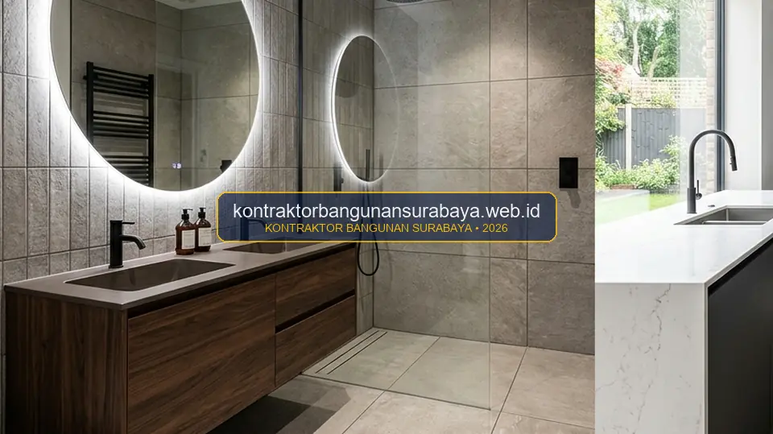

1. Bagaimana Cara Memilih Material Anti Air yang Tepat untuk Kamar Mandi dan Dapur?
Memilih material anti air yang tepat untuk kamar mandi dan dapur melibatkan pertimbangan tingkat porositas keramik, kualitas lapisan waterproofing pada area basah, serta pemilihan grout atau nat tahan air agar celah antar keramik tidak menjadi jalur rembesan.
kontraktorbangunansurabaya.web.id membantu pemilik rumah memilih kombinasi material yang tepat agar area basah di rumah tetap awet dan bebas masalah kelembapan, baik pada proyek renovasi bangunan ruang basah maupun instalasi paket interior dan finishing berkualitas tinggi.
Dampak Negatif Material Tidak Tahan Air
Penggunaan material berpori tinggi atau nat berkualitas rendah di area basah dapat memicu ubin menggelembung (*popping*), noda kerak kapur permanen, timbulnya jamur hitam *Stachybotrys*, hingga rembesan bocor yang merusak dak beton di lantai bawah.
2. Memilih Keramik dengan Tingkat Porositas Rendah untuk Area Basah
Keramik dengan tingkat porositas rendah, seperti keramik jenis porcelain (homogeneous tile), umumnya lebih tahan terhadap resapan air dibanding keramik biasa, sehingga lebih direkomendasikan untuk area lantai kamar mandi dan dinding dapur yang sering terkena cipratan air.
Tekstur permukaan keramik lantai kamar mandi juga perlu diperhatikan, di mana keramik dengan permukaan sedikit bertekstur (anti slip / matte) lebih disarankan untuk area basah dibanding keramik glossy licin yang berisiko menyebabkan terpeleset saat permukaan lantai basah.
Ukuran keramik yang dipilih juga memengaruhi jumlah nat pada permukaan, di mana keramik berukuran lebih besar (seperti 60x60 cm atau 60x120 cm) menghasilkan lebih sedikit garis nat, sehingga secara tidak langsung juga mengurangi jumlah celah yang berpotensi menjadi jalur rembesan air dibanding keramik berukuran kecil dengan banyak garis nat.
| Jenis Material Finishing | Tingkat Porositas | Karakter Tekstur | Area Aplikasi Terbaik |
|---|---|---|---|
| Porcelain Tile (Homogeneous) | Sangat Rendah (< 0.5%) | Matte, Structured, Anti Slip | Lantai shower, lantai kamar mandi kering & basah |
| Glazed Ceramic Tile | Sedang (3% - 7%) | Glossy / Satin Halus | Dinding kamar mandi & backsplash dapur |
| Granit Alam / Kuarsa | Rendah (dengan pelapis sealer) | Polished rapat noda | Top table kitchen set & meja vanity wastafel |
| Epoxy Tile Grout | 0% (100% Kedap Air) | Padat, Halus, Anti Noda | Garis nat seluruh area shower basah & bak cuci |
3. Pentingnya Lapisan Waterproofing Sebelum Pemasangan Keramik
Lapisan waterproofing pada lantai dan dinding area basah sebaiknya diaplikasikan sebelum keramik dipasang, karena keramik dan nat sebaik apa pun tetap memiliki celah mikro yang dapat dilalui air dalam jangka panjang apabila tidak didukung lapisan kedap air di bawahnya.

Area yang sering luput dari perhatian namun rawan rembesan adalah sudut pertemuan dinding dan lantai kamar mandi, sehingga aplikasi waterproofing pada area ini sebaiknya dilakukan lebih menyeluruh, naik beberapa sentimeter ke dinding (minimal 20 cm), bukan hanya pada permukaan lantai datar saja.
Teknik Aplikasi Waterproofing
- Semen 2 Komponen: Campuran semen polimer fleksibel yang tahan terhadap pergerakan mikro struktur beton.
- Serat Kasa Fiberglass: Dipasang pada sudut pertemuan lantai dan dinding untuk mencegah keretakan lapisan.
- Pelapisan Silang (Cross Coat): Lapisan pertama vertikal, lapisan kedua horizontal setelah lapisan pertama kering sentuh.
Waktu Tunggu & Uji Rendam
- Curing Time: Biarkan lapisan mengering sempurna 24 hingga 48 jam sebelum proses berikutnya.
- Uji Genang Air 24 Jam: Genangi air setinggi 5-10 cm untuk memastikan tidak ada rembesan ke dak bawah.
- Perekat Mortar Instan: Gunakan perekat ubin berkualitas tinggi yang tidak mudah lepas terkena air.
Waktu tunggu (curing time) lapisan waterproofing sebelum keramik dipasang juga perlu diperhatikan sesuai rekomendasi pabrikan, karena pemasangan keramik yang terlalu cepat sebelum lapisan benar-benar kering dapat merusak lapisan pelindung tersebut dan mengurangi efektivitasnya dalam jangka panjang.
4. Rekomendasi Kombinasi Material Tahan Lama dari kontraktorbangunansurabaya.web.id
Pemilihan nat atau grout tahan air dan anti jamur juga menjadi bagian penting yang sering terlewat, karena nat berkualitas rendah cenderung menghitam dan berjamur dalam waktu singkat, meski keramik dan lapisan waterproofing di baliknya sudah menggunakan material yang baik.
kontraktorbangunansurabaya.web.id merekomendasikan kombinasi material anti air berdasarkan tingkat penggunaan dan paparan air pada masing-masing area, sehingga hasil akhir kamar mandi dan dapur tidak hanya terlihat rapi saat baru selesai, tetapi juga tetap terjaga kualitasnya dalam jangka panjang sebagaimana dirancang dalam tahap desain arsitektur dan spesifikasi material RAB.
Panduan Perawatan Sistem Anti Air:
- Gunakan Pembersih pH Netral: Hindari pembersih dengan asam kuat (HCL) yang dapat mengikis nat semen dan merusak lapisan *glaze* keramik.
- Pastikan Sirkulasi Udara Baik: Nyalakan exhaust fan setelah mandi agar kelembapan ruangan segera terbuang.
- Pemeriksaan Nat Berkala: Lakukan penambalan ulang (*re-grouting*) secara berkala apabila ditemukan nat yang mulai terkikis atau retak rambut.
Perawatan berkala seperti pembersihan nat secara rutin dan penambalan ulang nat yang mulai retak juga membantu memperpanjang usia pakai sistem anti air pada kamar mandi dan dapur, sehingga tidak perlu menunggu kerusakan besar sebelum dilakukan perbaikan.
Konsultasi dengan tenaga ahli sebelum menentukan kombinasi material akhir juga disarankan, terutama untuk kamar mandi dengan kondisi khusus seperti minim ventilasi atau sering terkena paparan sinar matahari langsung, agar material yang dipilih benar-benar sesuai dengan kondisi spesifik ruangan tersebut.
Pemilihan material ini sebaiknya menjadi bagian dari perencanaan renovasi yang menyeluruh. Baca kembali panduan mengenai renovasi dapur dan kamar mandi serta rincian pada estimasi biaya renovasi dapur dan kamar mandi agar pemilihan material selaras dengan keseluruhan rencana renovasi Anda.
Jaminan Bebas Bocor Bergaransi
Semua pengerjaan waterproofing dan instalasi keramik ruang basah oleh Kontraktor Bangunan Surabaya dilindungi dengan jaminan garansi resmi anti bocor.
5. FAQ Seputar Material Anti Air Kamar Mandi dan Dapur
6. Konsultasi Gratis Sekarang
Ingin berdiskusi lebih lanjut mengenai kebutuhan konstruksi bangunan Anda di Surabaya? Hubungi tim kami melalui WhatsApp di 0889-8964-3555 untuk konsultasi awal tanpa biaya bersama kontraktorbangunansurabaya.web.id.
Konsultasi WhatsApp di 0889-8964-3555Tim Spesialis Finishing & Waterproofing Kontraktor Bangunan Surabaya
Divisi Ahli Aplikasi Waterproofing Semen & Membran, Pemasangan Homogeneous Tile, serta Finishing Ruang Basah Rumah Tinggal & Gedung Komersial di Surabaya Raya.